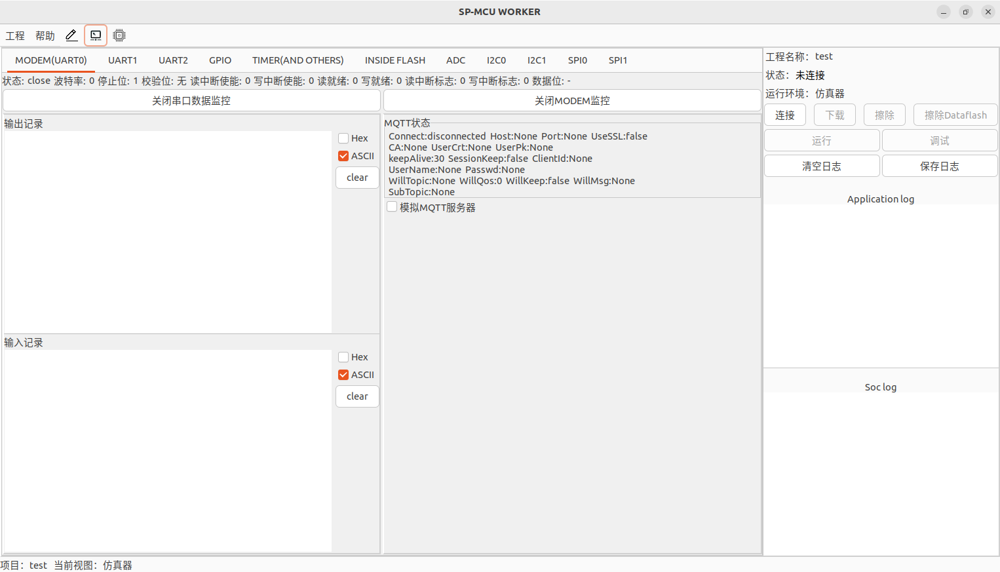
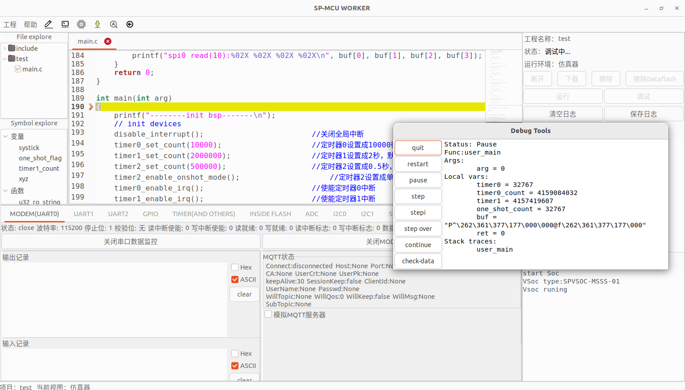
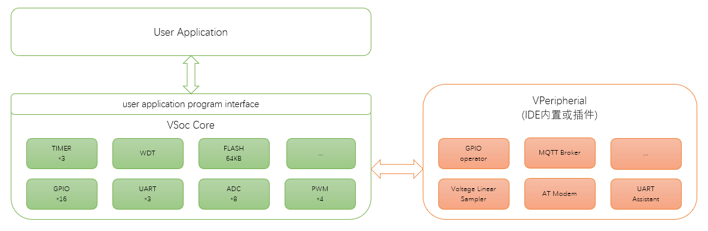
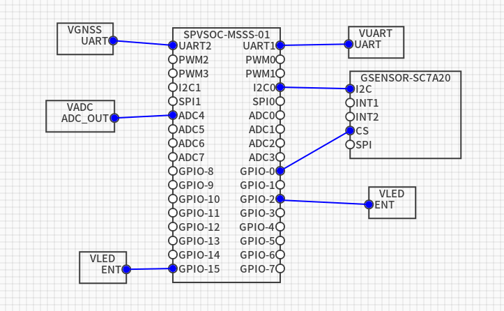
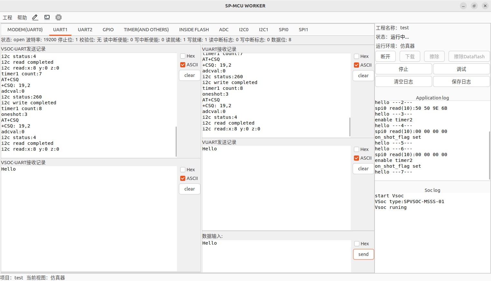
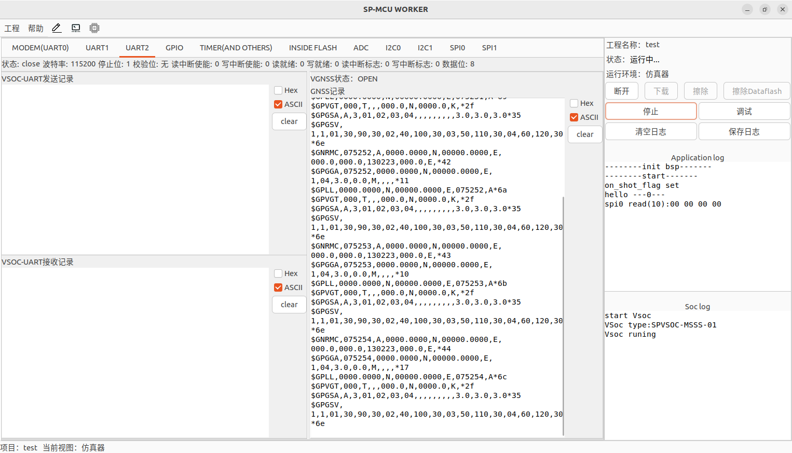
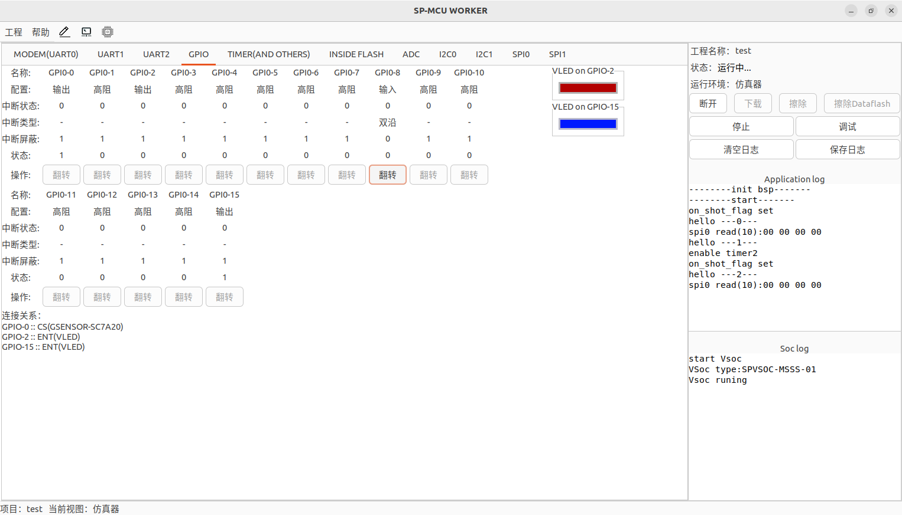
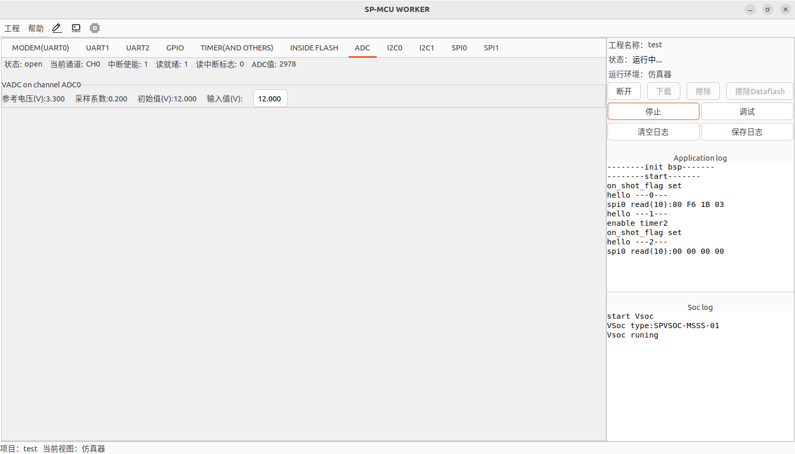

若在虚拟机中安装,请注意设置虚拟机的USB控制器为3.x版本
工程->创建->输入"工程名称"->选择VSOC类型->确定。
新建工程后,示例代码main.c自动加入工程,用户可以参考设计。用户可以通过左侧文件浏览器删除示例代码。
系统提供了用户编程接口文件sp_raw.h,以及常用C库头文件。这些文件自动加入工程,用户不可删除,不可修改,用户应用程序可以根据编程指导调用文件中的接口。
软件默认在$HOME目录下创建sp-worker-workspace工作区目录,新建的工程都放在该目录之下。例如,新建的工程名称为test,则工程文件都放在"$HOME/sp-worker-workspace/test"目录下。
当前只支持一次打开一个工程。
可以将现有工程导出,保存为独立的工程打包文件;可以将工程打包文件导入为工程,导入时可以重新命名工程名称。
可以参考导入文件夹的方法导入文件,也可以在文件浏览器中通过右键菜单"导入文件"实现。
左上窗口为文件浏览区,通过鼠标双击可以打开文件;通过鼠标悬停或单击左侧箭头可以展开目录,再次悬停或单击箭头可以折叠目录。
右侧为编辑区域,支持以下特性:
左下窗口为符号表浏览区,将显示当前打开文件的变量和函数清单。通过鼠标双击,可以跳转到符号定义行。
在编辑源码阶段,可以通过菜单"工程->编译"检查当前代码是否存在错误。
通过工具栏图标可以在3个视图中快捷切换:
点击"虚拟机视图"后,软件切换到内置的VSoc运行环境界面
点击右上窗口中的"连接"按钮,IDE将连接VSoc;点击"下载"按钮,将编译工程,若编译成功则将用户程序下载至VSoc运行环境;点击"运行"按钮,应用程序将开始运行。
运行后,用户可以监控软件运行数据和状态。
IDE支持部分模块(例如UART/GPIO/ADC)的外部模拟输入,详情请参考各模块的监控页面。
运行后,点击"停止"按钮,应用程序将停止运行。
点击右上窗口中的"调试"按钮,应用程序将进入调试模式。
停止或运行状态,都可以直接进入调试模式。
调试模式支持以下特性:
点击"quit"按钮,将退出调试模式,返回到进入调试模式之前的运行或停止状态。
虚拟外设以内置或插件形式集成在IDE中,应用程序可以与虚拟外设交互。
应用程序、VSoc、虚拟外设的关系如下图:
通过菜单 工程-->硬件设置 可以进行虚拟外设的连接配置。默认情况下,只有一个VSOC主芯片,其规格与创建工程时指定的规格型号一致。
设置界面基本操作:
鼠标左键拖拽可移动虚拟外设
空白处右键菜单可添加虚拟外设
虚拟外设上右键菜单可移除该虚拟外设
若适用,虚拟外设上右键菜单可设置上电初始状态
鼠标左键点击虚拟外设上连接点(带信号名称的圆点),根据提示进行连接。连接过程中,通过左键单击可创建折线路径,通过右键单击可取消上一个连接路径
鼠标左键点击虚拟外设上连接点(带信号名称的圆点),连续右键单击可删除连接
参考虚拟外设连接如下图:
可以输入数据,发送给VSoc的UART。
功能内置,无输入接口
工作于输入模式的GPIO,通过"翻转"操作,可以改变GPIO输入口线状态。
在ADC监控界面,输入的电压值,经过线性采样后发送给VSoc的ADC。
在设置视图中,通过虚拟外设右键菜单进行初始状态设置
SPVSOC-<宿主机类型><内置设备类型><计算核心类型><外设类型>-<版本>
名字以 字母、数字、- 作为命名字符
| 序号 | 名字 | 定义 |
|---|---|---|
| 1 | 蜂窝通信模块 | M |
| 2 | WIFI 通信模组 | W |
| 3 | 蓝牙通信模组 | B |
| 序号 | 名字 | 定义 |
|---|---|---|
| 1 | 独立设备 | S |
| 2 | 融合设备 | I |
| 3 | 独立+融合设备 | B |
| 序号 | 名字 | 定义 |
|---|---|---|
| 1 | 精简版 | T |
| 2 | 基础版 | B |
| 3 | 标准版 | S |
| 4 | 高级版 | A |
| 5 | 增强版 | P |
| 6 | 超级版 | U |
不同类型对应的资源数量如下:
| 序号 | 规格项 | 子项 | 精简版(T) | 基础版(B) | 标准版(S) | 高级版(A) | 说明 |
|---|---|---|---|---|---|---|---|
| 1 | 处理器 | 核心数量 | 1 | 1 | 1 | 1 | |
| 2 | 存储 | FLASH | 64KB | 64KB | 128KB | 256KB | |
| 3 | RAM | 32KB | 64KB | 128KB | 128KB | ||
| 4 | DATAFLASH | 64KB | 64KB | 64KB | 128KB | ||
| 外设规格(非管脚复用模式) | |||||||
| 5 | ADC | 通道 | 2 | 4 | 8 | 16 | |
| 6 | 分辨率 | 12bits | 12bits | 12bits | 12bits | ||
| 7 | UART | 通道 | 2/3 | 2/3 | 2/3 | 4/5 | 内置独立设备时,独立外设连接在VSOC的UART0上; 内置融合设备时,外设功能通过API向客户程序提供接口,不占用独立UART。 |
| 8 | 硬件流控 | 支持 | 支持 | 支持 | 支持 | ||
| 9 | 最大速率 | 115200bps | 115200bps | 115200bps | 2Mbps | ||
| 10 | GPIO | 数量 | 8 | 16 | 16 | 24 | |
| 11 | 支持唤醒 | 1 | 2 | 2 | 2 | ||
| 12 | TIMER | 数量 | 3 | 3 | 3 | 4 | |
| 13 | RTC | 数量 | 1 | 1 | 1 | 1 | |
| 14 | 支持唤醒 | 支持 | 支持 | 支持 | 支持 | ||
| 15 | PWM | 通道 | 2 | 2 | 4 | 8 | |
| 16 | 最大时钟频率 | 1MHz | 1MHz | 1MHz | 1MHz | ||
| 18 | I2C | 数量 | 1 | 1 | 2 | 2 | |
| 19 | 速率 | 100KHz/400KHz | 100KHz/400KHz | 100KHz/400KHz | 100KHz/400KHz | ||
| 20 | SPI | 数量 | 1 | 1 | 2 | 2 | |
| 21 | 速率 | 4MHz | 4MHz | 4MHz | 4MHz | ||
| 22 | WDT | 数量 | 1 | 1 | 1 | 1 | |
| 23 | 调试端口 (调试/下载/生产) |
数量 | 1 | 1 | 1 | 1 | |
| 24 | NET | 数量 | 1 | 1 | 1 | 1 | |
| 25 | DNS | 支持 | 支持 | 支持 | 支持 | 支持域名解析IPV4地址 | |
| 26 | socket 连接数量 |
8 | 8 | 8 | 8 | 支持IPV4地址 | |
| 27 | 文件系统 | 空间 | OEM确定 | OEM确定 | OEM确定 | OEM确定 | |
| 28 | 文件个数限制 | 16 | 16 | 16 | 16 | ||
01:第一版
命名含义:
CPU:1 RAM:128KB ROM:128KB DATAFLASH:64KB
INSEDE-MODEM:1,at-modem on UART0
UART:3 GPIO:16 TIMER:3 RTC:1
PWM:4 IIC:2 SPI:2 WDT:1
命名含义:
CPU:1 RAM:64KB ROM:64KB DATAFLASH:64KB
INSEDE-MODEM:1,at-modem on UART0
UART:3 GPIO:16 TIMER:3 RTC:1
PWM:2 IIC:1 SPI:1 WDT:1
| 序号 | OEM厂商 | 芯片平台 | 产品型号 | 实现规格 | 规格差异 |
|---|---|---|---|---|---|
| 1 | 有方科技 | UIS8910 | Aleta-N58CA | SPVSOC-MSSS-01 | 规格差异 |
| 2 | 有方科技 | UIS8850 | Aleta-N706CB | SPVSOC-MSSB-01 | 规格差异 |
虚拟Soc（VSoc）遵循标准单片机标准,内置RAM、程序Flash、数据flash、中断控制器、定时器、看门狗、ADC、IIC、GPIO、SPI、UART、PWM、RTC(说明:具体设备数量和详细参数请参阅对应的硬件模块说明)。
VSoc编程模型支持单任务前后台C语言编程模型、RTOS C语言编程模型、POSIX标准C语言编程模型(说明:默认编程模型为单任务前后台C语言编程模型)。
VSoc 原生支持硬件操作通用库。硬件操作API头文件为sp_raw.h
支持的标准C库函数,请参考自动加入工程中的其他头文件定义
VSoc支持标准控制台输出,使用pirntf输出到IDE标准控制台,不占用通用UART。
VSoc不提供寄存器级别的访问,只提供对象级别访问。
Vsoc对象有两类,一个类为中断,一类为外设。
外设对象支持的方法包括:hw_open、hw_close、hw_read、hw_write、hw_ctl。
说明:为了方便使用,sp_raw.h文件对外设的访问进行了二次封装,请用户使用封装后的编程接口。
如需使用原始调用,请联系磉盘计算机科技有限公司获取各个设备的详细使用说明。
无特殊情况,不建议直接调用原始接口访问外设。
前后台单任务编程模型是一种常用的单片机编程模式,程序分成两大部分,中断服务程序和业务程序。
中断服务程序在中断发生时立即被执行,主要用于处理高优先级实时事件（例如缓冲串口接收到数据防止被后续的输入覆盖）或者产生某种事件标志供其他业务使用（例如系统滴答）等。业务程序主要用于处理较为复杂且对实行性要求不高的任务,通常被事件标志驱动。
//事件定义
int event_1,event_2,...;
int sys_tick;//滴答计数
//中断服务程序1
int irq_service_1(int irq_no,void *p)
{
//处理外设
//设置事件
return 0;
}
int irq_service_2(int irq_no,void *p)
{
//处理外设
//设置事件
return 0;
}
.....
//初始化硬件
void init_bsp()
{
register_irq_service(dev1_id,irq_service_1,p_1);
register_irq_service(dev2_id,irq_service_2,p_2);
.....
}
//业务程序
int main(int arg)
{
//初始化硬件
init_bsp();
while(1)//for(;;)
{
//计时条件满足,
if(systick....)
{
...
}
//事件1发生
if(event_1...)
{
.....
}
//事件2发生
{
....
}
}
}
//中断服务程序1
int irq_service_1(int irq_no,void *p)
{
//处理外设
//设置事件
return 0;
}
int irq_service_2(int irq_no,void *p)
{
//处理外设
//设置事件
return 0;
}
.....
//初始化硬件
void init_bsp()
{
...
register_irq_service(dev1_id,irq_service_1,p_1);
register_irq_service(dev2_id,irq_service_2,p_2);
...
}
int main(int arg)
{
//初始化硬件
init_bsp();
while(1);
}
//初始化硬件
void init_bsp()
{
.....
}
int main(int arg)
{
//初始化硬件
init_bsp();
while(1)//for(;;)
{
if(查询硬件1状态满足条件)
{
...
}
if(查询硬件2状态满足条件)
{
...
}
}
}
//-----------------------示例程序---------------------------- #include//VSoc硬件和C库头文件 volatile unsigned int systick = 0; //系统滴答计数 volatile unsigned int one_shot_flag = 0; //定时器单次计时完成标志 unsigned int timer1_count = 0; //定时器1,到时次数 //整数转字符串函数 unsigned int u32_ro_string(unsigned int data, char *buf) { int i, j; char t; for (i = 0;; i++) { buf[i] = (data % 10) + '0'; data = data / 10; if (0 == data) { break; } } i++; for (j = 0; j < i / 2; j++) { t = buf[j]; buf[j] = buf[i - 1 - j]; buf[i - 1 - j] = t; } buf[i] = 0; return i; } //定时器0中断服务程序,定时器0作为系统滴答定时器 int timer0_irq_deal(int irq_no, void *data) { //滴答加一 systick++; return 0; } //定时器1中断服务程序 //定时中断将定时到时完成如下任务: // 1.到时次数加一,并转换成字符输出到UART1中 // 2.将gpio0反转输出 int timer1_irq_deal(int irq_no, void *data) { char buf[16]; unsigned int ret; timer1_count++; uart1_write("timer1 count:", 13); //向uart1写数据 ret = u32_ro_string(timer1_count, buf); uart1_write(buf, ret); //向uart1写数据 uart1_write("\n", 1); //向uart1写数据 gpio_set_value(0, !gpio_get_value(0)); //获取gpio0的状态,并反转 return 0; } //定时器3中断服务程序 //定期计时中断发生,设置单次及时完成标志 int timer2_irq_deal(int irq_no, void *data) { one_shot_flag = 1; return 0; } // GPIO中断服务程序 int gpio_irq_deal(int irq_no, void *data) { unsigned int flags; flags = gpio_get_irq_flags(); //获取当前发生中断IO标志位 if (flags & gpio_irq_flag(8)) //如果gpio8发送中断,则将gpio2设置成gpio8的状态 { gpio_set_value(2, gpio_get_value(8)); } //清空已经发生中断的gpio标志位;如果在gpio_get_irq_flags()后又发送的gpio中断,不会被本函数清空,会在中断服务返回后再次调用gpio中断服务程序 gpio_clr_irq_flags(flags); return 0; } // UART0中断处理程序,Vsoc Uart自带缓冲,具体缓冲大小请查阅硬件说明书 int uart0_irq_deal(int irq_no, void *data) { char buf[32]; int ret; //读取UART0的设备状态标准,判读是否可读 if (uart_is_r_irq_pending(uart_get_all_flags(UART0_DEV_ID))) { //如果可读,读取uart0数据,并写入uart1中 ret = uart_read(UART0_DEV_ID, buf, 32); if (ret > 0) { uart_write(UART1_DEV_ID, buf, ret); } } return 0; } // Adc中断服务程序 int adc_irq_deal(int irq_no, void *data) { char buf[16]; unsigned int adcval = 0; //读取adc值,并将数值转化成字符输出到uart1 int ret = adc_read(&adcval, sizeof(adcval)); if (ret > 0) { ret = u32_ro_string(adcval, buf); uart1_write("adcval:", 7); uart1_write(buf, ret); uart1_write("\n", 1); } return 0; } int main(int arg) { printf("--------init bsp-------\n"); // init devices disable_interrupt(); //关闭全局中断 timer0_set_count(10000); //定时器0设置成10000微秒,默认循环计数模式 timer1_set_count(2000000); //定时器1设置成2秒,默认循环计数模式 timer2_set_count(500000); //定时器2设置成0.5秒,默认循环计数模式 timer2_enable_onshot_mode(); //定时器2设置成单次计数模式 timer0_enable_irq(); //使能定时器0中断 timer1_enable_irq(); //使能定时器1中断 timer2_enable_irq(); //使能定时器2中断 register_irq_service(TIMER0_IRQ_NO, timer0_irq_deal, NULL); //注册定时器0中断服务程序 register_irq_service(TIMER1_IRQ_NO, timer1_irq_deal, NULL); //注册定时器1中断服务程序 register_irq_service(TIMER2_IRQ_NO, timer2_irq_deal, NULL); //注册定时器2中断服务程序 uart0_set(9600, UART_MODE_8N1); //设置uart0,波特率9600,8位数据,无校验位 uart1_set(19200, UART_MODE_8N1); //设置uart1,波特率9600,8位数据,无校验位 register_irq_service(UART0_IRQ_NO, uart0_irq_deal, NULL); //注册uart0中断服务程序 uart0_set_r_irq_e(); //使能uart0读中断 register_irq_service(GPIO_IRQ_NO, gpio_irq_deal, NULL); //注册GPIO中断服务程序 gpio_set_fun_mode(8, GPIO_FUNC_INPUT); //设置gpio8为输入模式 gpio_set_irq_mode(8, GPIO_IRQ_MODE_ALL); //设置gpio8中断模式为双沿中断 gpio_clr_irq_mask(8); //清除gpio8中断屏蔽位 #if 0 gpio_set_fun_mode(2,GPIO_FUNC_INPUT); gpio_set_irq_mode(2,GPIO_IRQ_MODE_ALL); gpio_clr_irq_mask(2); gpio_set_fun_mode(0,GPIO_FUNC_INPUT); gpio_set_irq_mode(0,GPIO_IRQ_MODE_ALL); gpio_clr_irq_mask(0); #else gpio_set_fun_mode(2, GPIO_FUNC_OUTPUT); //设置gpio2为输出模式 gpio_set_fun_mode(0, GPIO_FUNC_OUTPUT); //设置gpio0为输出模式 #endif timer0_enable(); //使能定时器0 timer1_enable(); //使能定时器1 timer2_enable(); //使能定时器2 uart0_enable(); //使能uart0 uart1_enable(); //使能uart1 watchdog_set_timeout(3000000); //设置看门狗定时时间3秒 watchdog_enable(); //使能看门沟 adc_enable(); //使能ADC adc_enable_irq(); //使能ADC中断 register_irq_service(ADC_IRQ_NO, adc_irq_deal, NULL); //注册adc中断处理服务 enable_interrupt(); //开启全局中断 unsigned int timer0 = 0; unsigned int timer0_count = 0; unsigned int timer1 = 0; // unsigned int timer1_count = 0; unsigned int one_shot_count = 0; char buf[16]; int ret; // unsigned int flags; printf("--------start-------\n"); while (1) { if (systick - timer0 >= 200) // 2秒定时器到达 { printf("hello ---%d---\n", timer0_count); //输出log timer0 += 200; timer0_count++; // 2秒定时器计数 uart0_write("AT+CSQ\r", 7); //向uart0发送AT flash_inside_enable(); //使能数据flash flash_inside_write(&timer0_count, sizeof(timer0_count), 0); //将2秒定时计数写入flash flash_inside_disable(); //关闭数据flash watchdog_feed(); //喂狗 adc_start(); //启动adc采样 } if (systick - timer1 >= 500) // 5秒定时器 { printf("enable timer2\n"); timer2_enable(); //再次开启定时2,定时器2为单次定时器,当其计数到达时,自动停止计数 timer1 += 500; } if (1 == one_shot_flag) //定时器2单次定时结束 { #if 0 //野指针测试 char *i; //i= 0x7070000; *i = 0; printf("i addr : %p\n",i); #endif printf("on_shot_flag set\n"); //输出log one_shot_flag = 0; //清空标志 uart1_write("oneshot:", 8); ret = u32_ro_string(one_shot_count, buf); buf[ret] = '\n'; uart1_write(buf, ret + 1); //输出计数次数到uart1 one_shot_count++; } ret = uart1_read(buf, 16); //轮询读uart1 if (ret > 0) //如果uart1有数据输入,则反射回去 { uart1_write(buf, ret); } } return 0; }
VSoc提供了3个定时器,计时精度为1微妙,定时计数为32位无符号整数。
每个定时器都有一个独立的中断号,每个定时器可以独立控制中断开启和关闭。
定时器有两种工作模式:一、循环计数模式、二、单次计数模式。
定时器内部会记录自定时器开启后累计到时次数,应用程序可以通过API获取该数值。
以下以timer0为例说明编程API
初始默认时间为0。
若定时器已经启动,且设置的定时时间为0,将停止定时器。
若定时器已经启动,且设置的定时时间不为0,将重新启动定时器。
最大定时时间为0xFFFFFFFF微秒,约1.19小时
初始默认工作模式为循环模式。
定时器默认工作模式为循环定时模式,若需要单次定时,可以使用该接口进行设置。
若定时器当前工作模式为单次模式,可以使用该接口设置为循环模式。
若定时器已经启动,设置工作模式将重新启动定时器。
初始默认为禁止中断。
使能定时器中断后,若定时器产生超时,注册的中断服务程序将被调用。
若定时器已经发生超时,使能定时器中断时,不会调用中断服务程序。
禁止定时器中断后,若定时器超时,注册的中断服务程序不会被调用,程序可以通过读取累计超时次数进行处理。
初始默认为停止定时器。
启动定时器时,定时器重新开始计数。到达设定的定时时间后,产生中断事件,若全局中断使能,并且定时器中断使能,则注册的中断服务程序被调用。之后,若定时器工作在循环模式,则定时器将重新计时;若定时器工作在单次模式,则定时器停止计时。
定时器停止计时。
初始默认值为0。
VSoc提供了若干组GPIO,每组GPIO包含最多32个独立控制的GPIO单元,GPIO单元通过编号0~31访问。
每组GPIO共享一个中断号,中断服务程序通过读取设备状态,判断哪些GPIO产生了中断。
实际的GPIO数量,将由VSOC类型和硬件实现差异确定,具体请参考外设规格和OEM厂商实现的VSOC规格中的GPIO部分。
控制不存在的GPIO单元,不会产生实际作用;查询不存在的GPIO单元,返回值无实际意义。
在Linux桌面平台,访问不存在的GPIO将提示错误信息,并停止运行应用程序,以便于程序定位错误。
以下以第一组GPIO为例说明编程API。
初始功能为高阻态。
#define GPIO_FUNC_Z 0 //高阻 #define GPIO_FUNC_INPUT 1 //输入模式 #define GPIO_FUNC_OUTPUT 2 //输出模式 #define GPIO_FUNC_SP 3 //特殊功能,复用脚
设置为输出模式的GPIO,可以设置GPIO输出高低电平。
控制非输出模式的GPIO输出,不会产生实际作用。
初始GPIO状态由外部电路确定;Linux桌面平台:可以通过IDE菜单"设置",设置VSOC参数,指定GPIO初始状态。
不同的gpio功能都可以设置中断模式;只有gpio为输入的GPIO,才会真正产生中断。
依据外部输入信号的不同,GPIO支持不同的边沿中断触发模式。
初始中断模式为无中断,不触发中断。
#define GPIO_IRQ_MODE_NONE 0 //无中断 #define GPIO_IRQ_MODE_UP 1 //上升沿 #define GPIO_IRQ_MODE_DOWN 2 //下降沿 #define GPIO_IRQ_MODE_ALL 3 //上升和下降沿
注意:同一组GPIO共享同一个中断号,在中断服务程序中,请通过读取设备状态,判断哪些GPIO产生了中断。
初始状态为禁止中断。
可以同时使能或禁止多个gpio中断,使用接口gpio_set_irq_masks(mask)和gpio_clr_irq_masks(mask)。
可以同时读取多个gpio中断使能标志,使用接口gpio_get_irq_masks()。
GPIO中断为单次中断,若没有清除中断标志,不会导致循环进入GPIO中断。
可以同时读取或清除多个gpio中断标志,使用接口gpio_get_irq_flags()和gpio_clr_irq_flags(flag)。
VSoc提供了3个UART。
每个UART有一个独立中断号,UART有读中断和写中断控制,读写中断共享一个中断号。
每个UART都是保持一个状态标志,用于标识设备是否可读写,是否发送中断。
每个UART都有读写缓冲,可以一次收发多个数据,缓冲大小请参考OEM厂商实现的VSOC规格中的UART部分。
若VSOC类型属于内置独立设备,则独立设备默认连接至UART0,UART0不能再用于其他外设连接。
若VSOC类型属于内置融合设备,则融合设备不会占用UART0,UART0可用于其他外设连接。
以下以UART1为例说明编程API。
初始参数为115200bps,8位数据位,无校验,1个停止位。
若设备已经打开,设置参数将立即生效,并清空接收和发送缓存。
#define BAUD_RATE_B50 50 #define BAUD_RATE_B75 75 #define BAUD_RATE_B110 110 #define BAUD_RATE_B134 134 #define BAUD_RATE_B150 150 #define BAUD_RATE_B200 200 #define BAUD_RATE_B300 300 #define BAUD_RATE_B600 600 #define BAUD_RATE_B1200 1200 #define BAUD_RATE_B1800 1800 #define BAUD_RATE_B2400 2400 #define BAUD_RATE_B4800 4800 #define BAUD_RATE_B9600 9600 #define BAUD_RATE_B19200 19200 #define BAUD_RATE_B38400 38400 #define BAUD_RATE_B57600 57600 #define BAUD_RATE_B115200 115200 #define BAUD_RATE_B230400 230400
上述定义的波特率都需要支持,除非在规格差异表中做特殊说明;未定义的波特率可以进行设置,但是否可以工作由硬件设备决定。
#define UART_MODE_8N1 1 // 8位数据位,无校验 #define UART_MODE_7E1 2 // 7位数据位,偶校验 #define UART_MODE_7O1 3 // 7位数据位,奇校验
上述定义的模式都需要支持,除非在规格差异表中做特殊说明;使用未定义的模式将默认使用UART_MODE_8N1模式。
在中断服务程序中,请先读取UART状态,判断产生中断的原因,再做相应处理。
读中断产生后,若没有进行读操作,不会持续产生读中断;若进行了读操作,且仍然可读,将再次产生读中断。
写中断产生后,若没有进行写操作,不会持续产生写中断;若进行了写操作,且仍然可写,将再次产生写中断。
默认状态为禁止所有中断。
| 使能读(接收)中断 | void int uart1_set_r_irq_e(void) |
| 使能写(发送)中断 | void uart1_set_w_irq_e(void) |
| 使能读写(接收/发送)中断 | void uart1_set_all_irq_e(void) |
| 禁止读(接收)中断 | void uart1_clr_r_irq_e(void) |
| 禁止写(发送)中断 | void uart1_clr_w_irq_e(void) |
| 禁止读写(接收/发送)中断 | void uart1_clr_all_irq_e(void) |
打开设备后,可以发送或接收数据;若全局中断和读/写中断打开,注册的中断服务程序将会被调用。
打开设备时,接收缓存被清空。
关闭设备后,不能收发数据,也不会产生中断。
关闭设备时,发送立即停止,发送缓存被清空。
返回值包含多个状态信息,可以通过位掩码进行判断处理
#define UART_FLAG_WRITE_READY 0x04 //写就绪 #define UART_FLAG_READ_READY 0x08 //读就绪
也可以通过以下宏帮助处理
#define uart_is_r_ready(a) (a & 0x8) //判读是否可读 #define uart_is_w_ready(a) (a & 0x4) //判断是否可写
数据保存到DATA FLASH,掉电后不丢失。存储空间大小依据计算核心规格中的DATAFLASH定义。
读写数据前,请先使能DATA FLASH。
读写完毕后,请关闭DATA FLASH,以防误操作。
若偏移量加上数据长度超出DATA FLASH最大范围,则只会返回设备有效范围内的数据。
若偏移量加上数据长度超出DATA FLASH最大范围,则只会写入设备有效范围内的数据。
当看门狗开启,并设置定时时间后,如果看门狗溢出则重启VSoc.
关闭看门狗,则看门狗不起作用。
看门狗不使用中断。
初始看门狗定时间为1000000uS, 即1秒。
若看门狗已经启动,且设置的定时时间为0,将停止看门狗。
若看门狗已经启动,且设置的定时时间不为0,将重新启动看门狗。
最大定时时间为0xFFFFFFFF微秒,约1.19小时
注意:若看门狗已经使能,再次使能将重新计时。
若看门狗已打开,喂狗操作将使看门狗定时器重新计时。程序应该在看门狗溢出前执行喂狗操作。
VSoc提供了1个12位ADC设备,通道数量由VSOC类型和硬件实现差异确定,具体请参考外设规格和OEM厂商实现的VSOC规格中的ADC部分。
程序在使用ADC设备时,请先使能ADC,设置ADC转换通道,设置连续转换次数,启动ADC转换,查询转换完成标志或注册ADC中断服务程序,以在完成ADC转换时读取转换结果。
初始通道为通道0。
设置规格定义范围内但硬件不支持的通道参数,返回成功。
初始默认次数为1次。
若设置的通道在规格定义范围内但硬件不支持,启动转换将不会成功。
在ADC转换期间,可以使用该接口中止ADC转换。
返回值包含多个状态信息,可以通过位掩码进行判断处理
#define ADC_STATUS_START_READY 0X01 #define ADC_STATUS_CONVERTING 0X02 #define ADC_STATUS_READ_READY 0X04
当ADC_STATUS_START_READY置位时,ADC才能启动成功。
当ADC转换完成后, 标志ADC_STATUS_READ_READY置位,程序可以读取ADC转换结果。
注意:一次ADC转换结果长度为sizeof(unsigned int);若连续转换次数设置为10,则应准备的缓存大小为 10*sizeof(unsigned int)。
在中断服务程序中,请先查询ADC状态,若ADC_STATUS_READ_READY置位,则程序可以读取ADC转换结果。
VSoc提供了若干个PWM输出通道,具体个数参考外设规格和OEM厂商实现的VSOC规格中的PWM部分。
每个PWM通道基础精度为1微秒,即时钟频率为1MHz;最大能够产生频率为500KHz的方波。
每个PWM通道有两个参数可以设置,一个是频率,一个是高电平占空比。
频率设置范围0-500000(Hz),占空比设置范围0-100(%),VSoc会根据频率和占空比输出波形;无法满足参数设置时会输出一个近似方波。
PWM设备不使用中断。请先设置输出频率,输出占空比,最后打开设备。以下以PWM0为例说明编程API。
设置为0时,不生效,不影响当前参数。
打开PWM后,PWM波形开始输出。打开PWM以后,程序可以设置新的输出频率和占空比。
若PWM已经打开,重新打开PWM不会导致波形重新产生。
关闭PWM后,PWM波形停止输出,并且输出低电平。
Vsoc 提供一个RTC设备,RTC拥有闹钟功能,并提供闹钟中断。
当设备open时如果已经设置闹钟定时且闹钟时间大于当前RTC时间,闹钟
自动计时并置计时状态位,当闹钟定时时间到达时置闹钟到时状态位,如果
程序许可了中断,Vsoc自动执行中断服务程序。当设备关闭时,自动关闭
闹钟计时并清空计数状态位并保留闹钟时间设置。如果程序重新设置RTC时间,
则闹钟时间也被清空并且关闭定时闹钟。闹钟定时时间是绝对时间,当闹
钟定时时间到达RTC停止闹钟计时,如果需要循环闹钟,程序需要在定时到达
后设定一个新闹钟。
RTC设备open/close并不会影响RTC自身的计时,只控制闹钟等额外功能。
查询年月日时分秒的时间信息
struct rtc_data
{
unsigned char year; //year - 2000
unsigned char month; //1 ~ 12
unsigned char day; //1 ~ 31
unsigned char hour; //0 ~ 23
unsigned char min; //0 ~ 59
unsigned char sec; //0 ~ 59
unsigned char week; //0 ~ 6 0=星期天
};
设置新的RTC时间,设置成功后将停止闹钟计时,并将闹钟时间清空。
查询从1970年到当前时间的秒数。
RTC闹钟是一种特殊设备,只要保持VSOC供电或者单独保持RTC电源（具体实现参加具体设备实现）,如果在关机前用户成功开启了RTC闹钟,且在闹钟到时前关机,则在设定时刻到来时RTC闹钟会唤醒VSOC,VSOC重新启动,并且将RTC闹钟运行状态设置成停止,闹钟到时状态置位,闹钟时间保持不变。如果在这个时刻前开机或者重启机器,则RTC闹钟继续处于开启状态,闹钟时间不变。
状态包括:闹钟正在计时,闹钟计时结束。可以通过位掩码进行判断处理
#define RTC_ALARM_FLAG_MASK 0x1 //闹钟计时结束 #define RTC_ALARM_RUN_MASK 0x2 //闹钟正在计时
也可以通过以下宏帮助处理
#define rtc_alarm_is_running(status) (status&RTC_ALARM_RUN_MASK) #define rtc_alarm_is_finish(status) (status&RTC_ALARM_FLAG_MASK)
闹钟计时结束状态置位以后,通过该接口进行清除。
闹钟正在计时状态由RTC自动清除和置位,不需要通过接口清除。
设置闹钟成功后,如果闹钟已经使能,则立即覆盖之前的设置并生效。
如果设置的闹钟时间在当前时间之前,将停止之前设置的闹钟, 并将清除所有闹钟标志。
如果没有设置过闹钟时间,闹钟时间将被填充为0.
RTC闹钟没有使能时,不会产生闹钟中断,不会将设备从休眠状态唤醒。
VSoc提供2路I2C总线,每个总线下面可以连接多个从设备。
I2C设备支持两种中断信号:传输完成/操作失败;
当总线传输完成,且传输操作包含读操作时,用户程序可以读取从从设备中读回来的数据;
当总线传输完成,用户程序可以发起新的传输操作;
当总线操作失败时,需要检查参数是否正确,以及设备是否存在。
以下以I2C0为例说明编程API。
禁止总线后,传输立即停止。
使能I2C总线后,才能发起传输操作。
从I2C设备中连续读取指定长度的数据。设备内部地址以及内部地址处理方式由设备特性决定。
向I2C设备中连续写入指定长度的数据。
从I2C设备中连续读取指定长度的数据后,立即向I2C设备中连续写入指定长度的数据。
向I2C设备中连续写入指定长度的数据后,立即从I2C设备中连续读取指定长度的数据。
状态包括:设备忙、传输完成、操作失败,可以通过位掩码进行判断处理
#define I2C_STATUS_BUSY 0X01 // 设备忙,正在进行读写操作 #define I2C_STATUS_XFER_FAILED 0x02 // 操作失败,设备不存在或设备应答出错 #define I2C_STATUS_XFER_COMPLETED 0x04 // 传输完成
I2C设备支持传输完成和操作失败中断处理。
当发起的只读、读写、写读传输完成后,通过读接口获取数据。
该操作为FIFO读。例如,当上一次传输包含读操作10字节且传输成功,则可以分次读取数据,如第一次读取3字节,第二次读取7字节,后续读取将返回长度0。
VSoc提供1路或2路SPI总线,支持全双工通信,并支持标准SPI通信的4种模式。
当总线传输完成时,SPI总线可产生传输完成中断;若传输操作包含读操作,用户程序可以读取从设备中读回来的数据。
总线传输完成后,可以发起新的传输。
以下以SPI0为例说明编程API。
禁止总线后,传输立即停止。
使能SPI总线后,才能发起传输操作。
允许设置超过4MHz的频率,该参数是否能工作,取决于硬件是否支持,请参考OEM厂商实现的VSOC规格中的SPI部分
SPI模式由时钟极性(CPOL)和时钟相位(CPHA)组成:
时钟极性CPOL: 即SPI空闲时,时钟信号SCLK的电平（1:空闲时高电平; 0:空闲时低电平）
时钟相位CPHA: 即SPI在SCLK第几个边沿开始采样（0:第一个边沿开始; 1:第二个边沿开始）
状态包括:设备忙、传输完成,可以通过位掩码进行判断处理
#define SPI_STATUS_BUSY 0X01 #define SPI_STATUS_XFER_COMPLETED 0X02
当发起的传输操作中读取数据长度rlen大于0,则传输完成后,通过读接口获取数据。
用户程序可以使用OTA升级接口对VSoc应用程序进行升级;升级数据由用户程序通过网络或本地接口获取。
升级时,用户可以保存16字节的用户自定义数据。
启动OTA升级流程,并返回OTA状态、用户数据、OTA数据的尺寸信息;如果OTA未启动则初始化OTA,初始化后用户数据为16字节的0。
将数据追加到OTA数据中。
完成OTA数据更新,不允许继续向OTA追加数据。
将OTA数据替换用户应用程序。重新启动VSoc或系统后,将运行升级后的应用程序。
查询OTA状态、用户数据、OTA数据的尺寸信息。
完成OTA数据更新后,可以回读OTA数据进行校验,以确保OTA数据正确。
启动OTA升级后,用户可以随时更新用户数据。
升级过程中,可以通过该接口停止升级。
OTA升级过程中断后重新启动时,OTA中断前的OTA数据被保留,用户可以在上次的进度上继续更新。
关机状态下,RTC时间继续计时;若设置RTC闹钟,则闹钟到时将启动系统运行。
VSoc进入等待事件模式,虚拟处理器休眠;任意io变化事件,都会唤醒VSoc虚拟处理器。
原型:void wfi(void);
当VSoc设备的宿主机类型为蜂窝通信模块,且内置设备类型为融合设备或为独立+融合设备时,VSoc将内置一个蜂窝通信网络设备供用户使用,以下简称网络设备。
网络设备提供DNS域名解析服务,若解析成功将返回一个IPV4地址。
通过网络设备可以建立socket连接,连接类型支持TCP, UDP和SSL;最大socket连接数量在外设规格中定义。
网络设备打开之后,才能正常使用下述网络功能。
打开网络设备时,将自动激活网络。
关闭网络设备后,将自动关闭所有socket连接,并去激活网络。
打开网络设备时,会自动激活网络;
激活网络后,需等待激活完成。
如果网络已被去激活,则可以使用激活功能重新激活网络。
去激活网络后不能使用网络功能。已建立的socket连接将进入CLOSED状态,无法收发数据;DNS功能无法使用。
去激活后,可以查询设备和socket状态,可以设置APN。
通过查询DNS状态以获得详细状态。
以下x为0~7,分别代表8路socket
状态包括:sockx_[status|read_ready|write_ready|error]
查询指定socket的状态。
#define SOCKET_TYPE_TCP 0 #define SOCKET_TYPE_UDP 1 #define SOCKET_TYPE_SSL 2
不同socket连接类型具有不同的状态:
#define SOCKET_TCP_STATUS_IDLE 0 #define SOCKET_TCP_STATUS_READY 1 #define SOCKET_TCP_STATUS_CONNECTING 2 #define SOCKET_TCP_STATUS_CONNECTED 3 #define SOCKET_TCP_STATUS_CLOSED 4 #define SOCKET_TCP_STATUS_CLOSING 5 #define SOCKET_TCP_STATUS_BINDED 6 #define SOCKET_TCP_STATUS_LISTEN 7
#define SOCKET_UDP_STATUS_IDLE 0 #define SOCKET_UDP_STATUS_READY 1 #define SOCKET_UDP_STATUS_BINDED 2 #define SOCKET_UDP_STATUS_RUN 3 #define SOCKET_UDP_STATUS_ERR 4
#define SOCKET_SSL_STATUS_IDLE 0 #define SOCKET_SSL_STATUS_READY 1 #define SOCKET_SSL_TCP_STATUS_CONNECTING 2 #define SOCKET_SSL_TCP_STATUS_CONNECTED 3 #define SOCKET_SSL_STATUS_CONNECTING 4 #define SOCKET_SSL_STATUS_CONNECTED 5 #define SOCKET_SSL_STATUS_CLOSED 6 #define SOCKET_SSL_STATUS_CLOSING 7
当连接出现错误并被用户程序处理后,可以通过成功的发送或接收数据操作将error标志清除。
该接口可一次性读取网络设备状态,以及所有socket的状态信息,并将清除中断标志(irq_pend)和状态改变标志(_change)
结构体中dev_status字段的定义,与联合体union net_device_dev_status的的定义一致,请参考网络状态。
结构体中sock_status字段的定义,与联合体union net_device_socket_status的定义一致,请参考socket状态。
设置APN前,需去激活网络并等待去激活完成;设置APN; 最后重新激活网络并等待激活完成。
#define DNS_STATUS_IDLE 0 #define DNS_STATUS_RUNNING 1 #define DNS_STATUS_FINISHED 2
当DNS状态为IDLE时,用户可通过该接口请求域名解析。
请求成功后,DNS状态变为RUNNING。
当DNS完成解析后,状态变为FINISHED,用户可通过该接口获取解析结果。
获取DNS解析结果后,DNS状态变为IDLE。
x为0~7,分别代表8路socket。
产生中断后,通过查询中断源,可以确定引起此次中断的原因。中断源通过查询网络设备和socket状态清除。
中断源位定义同中断使能状态。
#define SOCKET_TYPE_TCP 0 #define SOCKET_TYPE_UDP 1 #define SOCKET_TYPE_SSL 2
当前VSoc只有一个网络设备,绑定操作即为绑定端口号。
如果未绑定端口号,网络设备工作时将使用自动分配的端口号。
注意:网络设备激活后获得的IP地址可能是局域网地址,当socket作为client与外部通信时,外部看到的通信IP端口可能与网络设备的IP端口不一致,这是正常现象。另外,SSL类型的socket目前不支持绑定操作,需要在连接时就指定端口号。
当socket类型为TCP或者SSL,且作为client连接远程server时,需要先建立连接,然后才能发送和接收数据。
请求建立连接后, 通过使能connect_finished中断,且检查socket状态是否已CONNECTED,以确认连接是否成功。
socket连接成功后,且为可发送状态时,才能正常发送数据。
socket为可发送状态时,才能正常发送数据。
socket连接成功后,且为可接收状态时,才能正常接收数据。
socket为可接收状态时,才能正常接收数据。
关闭socket后,进入IDLE状态,立即停止数据的发送和接收,该通道socket不再产生中断事件。
当VSoc的类型为LBSV时,VSoc将内置一个文件管理系统供用户使用,以下简称文件系统。
文件系统提供最大512k字节的磁盘空间,最多可以创建16个文件。
通过文件系统用户可以长久保存私有数据信息。
接口头文件sp_fs.h 。
参数___name, 要打开的文件名。
参数flag,可以是如下标识:
FS_OPEN_FLAG_RD
FS_OPEN_FLAG_WR
FS_OPEN_FLAG_CREAT
FS_OPEN_FLAG_TRUNC
返回文件描述符fd, 若返回数值小于0则打开失败
参数fd, 文件描述符。
返回数值等于0,文件正常关闭
返回数值小于0,文件关闭时发生异常
参数name, 要删除的文件名。
返回数值等于0,文件正常删除
返回数值小于0,文件删除时发生异常
参数fd, 文件描述符。
参数seektype, 有 FS_SEEK_CUR,FS_SEEK_SET, FS_SEEK_END
position, 文件指针位置
参数fd, 文件描述符。
参数fs_read_buffer, 读出时数据存放的buffer
buffersize, buffer大小
返回实际读出的字节数;若数值小于0,读操作异常。/p>
参数fd, 文件描述符。
参数buff_w, 存放要写到文件的数据
buffersize, 要写入文件的数据个数
返回实际写入的字节数;若返回数值小于0,写操作异常。 /p>
参数fd, 文件描述符。
参数name, 要查询的文件名。
返回 struct file_status,参考sp_fs.h文件 。
返回 struct fs_status, 参考sp_fs.h文件 。
VSOC提供了最基础的任务管理功能，这些功能可用于RTOS移植。不建议裸C程序直接使用。
任务创建成功后,不会自动运行。
运行成功后，其他任务停止, 该任务运行。